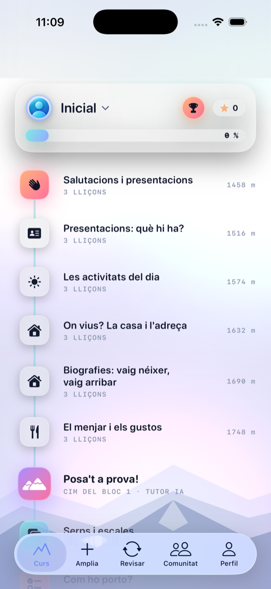
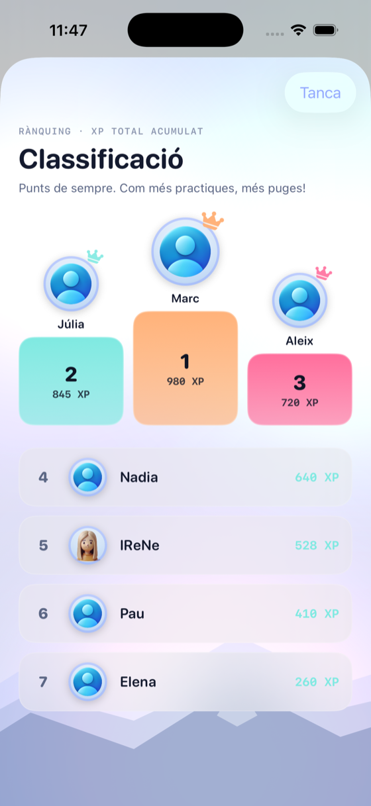
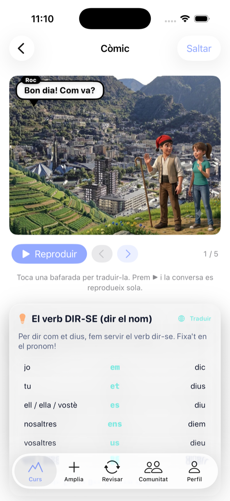
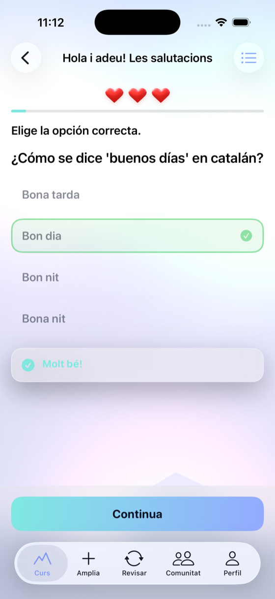
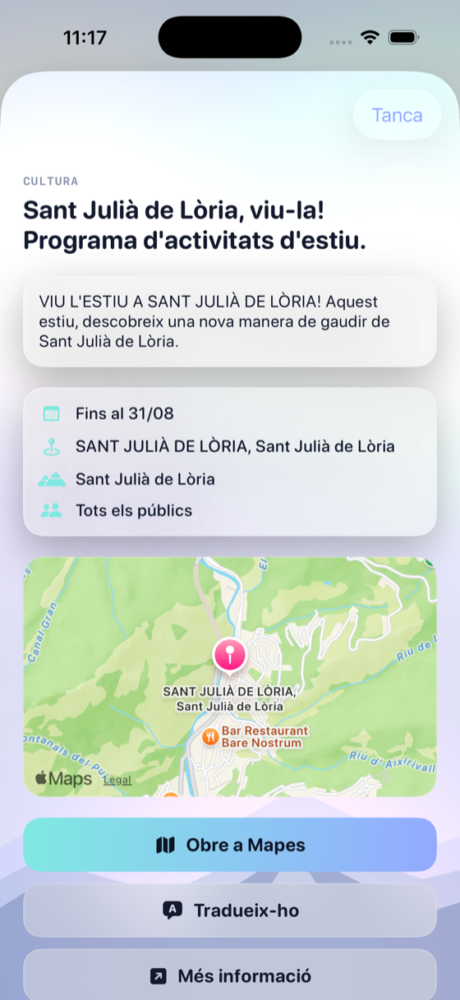
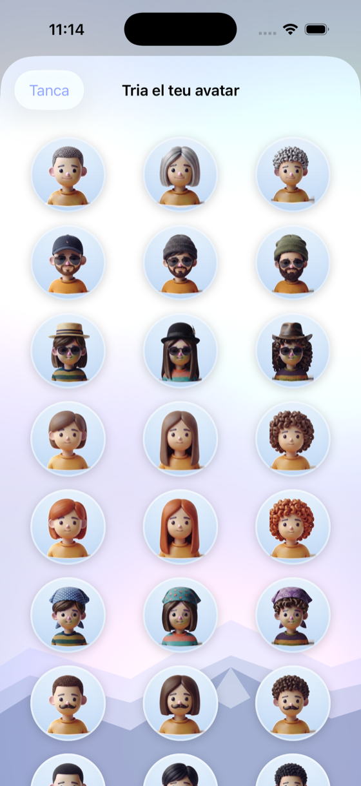
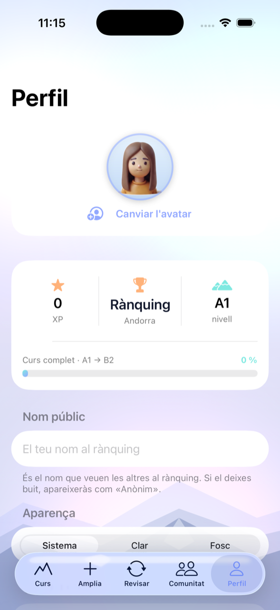
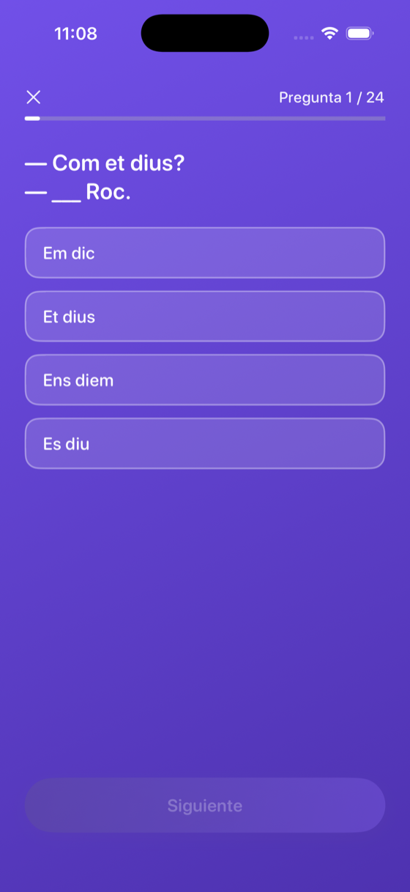

Aprèn català, pas a pas.
Practica amb exercicis reals, prepara't per als exàmens oficials i tingues un tutor d'IA que et corregeix i t'anima cada dia.
Tot el que necessites per parlar català
Un curs complet, amb un tutor que t'acompanya i eines per no deixar-ho mai.
Tutor d'IA
Corregeix les teves respostes, t'ajuda amb l'expressió oral i et fa perdre la por a parlar, en el teu idioma.
Curs per blocs
Lliçons, còmics, avaluació oral i autoavaluació per saber què repassar.
Motivació
Rànquing, punts i avatars perquè practicar cada dia enganxi.
Agenda cultural
Cada territori amb les seves activitats culturals, sempre actualitzades.
Vine a viure a Andorra i aprèn el català amb l'app
Prepara't per al dia a dia, la feina i els tràmits, amb un curs pensat per a tu.
Apunta't a la llistaPractica de veritat i aprova l'examen
Exercicis pràctics a cada lliçó i models d'examen oficials (A1 a B2) per arribar-hi ben preparat, amb la correcció del tutor d'IA.
Mira com és per dins
Disseny cuidat, amb l'esperit dels Pirineus.








Com funciona, pas a pas
Del primer dia fins a l'examen, l'app t'acompanya en cada pas.
Fes el test de nivell
Un test curt et col·loca al punt just: inicial, bàsic, elemental o intermedi.
Aprèn amb còmics i lliçons
Cada unitat comença amb un còmic que explica la teoria, i després vénen les lliçons.
Practica amb exercicis
Opció múltiple, omplir buits, emparellar, ordenar paraules, escoltar i escriure.
El tutor d'IA et corregeix
T'explica cada error en el teu idioma i et diu exactament què has de repassar.
Posa't a prova
Al final del bloc: conversa oral amb el tutor, joc de repàs i autoavaluació.
Prepara't per l'examen
Fes models d'examen oficials (A1 a B2) per arribar-hi ben preparat.
Totes les funcions dins de l'app
Tot el que trobaràs a ACat per aprendre, practicar i motivar-te.
Rànquing entre alumnes
Guanya XP, puja a la classificació i competeix amb la resta d'alumnes.
Quedades de la comunitat
Trobades per parlar català en persona: xerrem d'un tema i ens coneixem tots.
Test de nivell
Et col·loca al nivell adequat abans de començar.
Curs per blocs
Lliçons agrupades en blocs, amb còmics de teoria.
Exercicis variats
Opció múltiple, buits, emparellar, ordenar, escoltar…
Tutor d'IA
Corregeix i t'explica el perquè de cada resposta.
Avaluació oral
Converses amb el tutor per practicar la parla.
Autoavaluació
Marca què ja saps fer i què has de repassar per blocs.
Vocabulari amb repàs
Les paraules tornen just quan toca (repàs espaiat).
Jocs de bloc
Repassa jugant al final de cada bloc.
Rànquing i avatars
Competeix per XP i tria el teu avatar.
Exàmens oficials
Models oficials A1–B2 per preparar-te de veritat.
Agenda d'Andorra
Activitats culturals de les set parròquies.
La teva veu
El tutor pot parlar amb la teva pròpia veu (opcional).
Una app feta per catalanoparlants nadius. La intel·ligència artificial està entrenada per ells, seguint la normativa de l'IEC, perquè el català que aprens sigui sempre correcte.
Comença a parlar català
Apunta't a la llista d'espera i t'avisem el dia que surti.